Одной из важных научных проблем естествознания является решение задачи предсказания поведения изучаемого объекта во времени и пространстве на основе знаний о его
начальном состояниии. Эта задача сводится к нахождению некоторого закона, позволяющего по имеющейся информации об объекте в начальный момент времени определить его будущее
состояние в любой следующий момент времени. Этот закон носит название закон эволюции. Его можно задать с помощью дифференциальных уравнений, дискретных отображений или др методов.
Под динамической системой понимают любой объект или процесс, для которого однозначно введено понятие состояния как совокупности некоторых величин в данный момент времени
и задан закон, который описывает изменение (эволюцию) начального состояния в течением времени.
Таким образом, главное свойство динамической ситемы заключается втом, что зная ее состояние в некоторый момент времени, можно найти состояние в любой последующий момент времени.
Для этого достаточно применить к начальному состоянию закон эволюции.
Математическая модель динамической системы считается заданной, если введены динамические переменные (координаты) системы, определяющие однозначно ее состояние, и указан закон
эволюции состояния во времени.
Пусть закон эволюции динамической системы во времени описывается системой обыкновенных дифференциальных уравнений.
\[\frac{dx_i}{dt} = \dot{x} = f_i ( x_1,x_2,...,x_N) \]
Тогда величины \(x_{1},x_{2}...x_{N}\) являются координатами точки \(\vec{x}\) в N-мерном пространстве.Эта точка называется фазовой точкой. Она показывает состояние динамической системы.
Совокупность состояний образует фазовое пространство, причем каждой точке соответствует единственное состояние. Частным случаем фазовго пространства является фазовая плоскость, где
по осям координат откладываются какие-либо две переменные, однозначно определяющие состояние системы второго порядка. Изменению состояния системы во времени отвечает движение
фазовой точки вдоль некоторой линии, называемой фазовой траекторией.
Динамическая система может находится в состоянии равновесия. Это такое состояние, когда для функции \(x=f(x_0)\) справедливо равенство \(x=f(x)\) для любого момента времени.
Геометрически на фазовой плоскости это представляется неподвижной точкой. В случае, когда \(x=f(f(x))\), говорят о неподвижной точке периода 2, или цикле.
Важную роль играет информация об устойчивости неподвижной точки. Если при подаче небольшого возмущения со временем система вернется в исходное состояние (возмущение затухает),
то такое состояние называется устойчивым. Если начальное отклонение нарастает со временем - состояние неустойчиво. Наглядным примером устойчивого состояния может служить
шарик в ямке, а неустойчивого - шарик на верхушке горки.
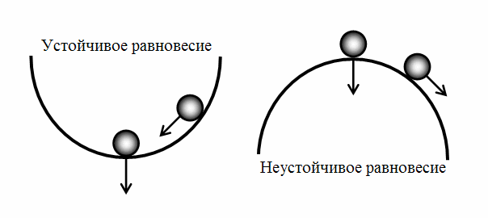
Типы состояний равновесия (характер поведения фазовых траекторий в окрестности точки):
1. Узел
- Устойчивый. Это точка равновесия, в которую входят все интегральные кривые, проходящие через окрестность узла. Фазовые траектории имеют вид парабол.
- Неустойчивый. Аналогичен устойчивому, с тем лишь отличием, что интегральные кривые выходят из точки. Перейдет в устойчивый при смене направления времени в системе.
- Вырожденный. Обычно образуется, когда тип особой точки меняется с узла на фокус (или обратно). Он может быть как устойчивым, так и неустойчивым.
2. Седло
Это всегда неустойчивое состояние равновесия. Примером может служить верхнее положение маятника на жестком стержне.
3. Седло - узел
Можно рассматривать как пограничный случай между седлом и узлом при смене режимов.
4. Фокус. Все интегральные кривые, проходящие через точки достаточно малой окрестности фокуса, представляют собой спирали с бесконечным числом витков в любой
сколь угодно малой окрестности фокуса (всякая интегральная кривая бесконечное число раз закручивается вокруг фокуса).
- устойчивый. Все фазовые траектории спиралеобразно приближаются к особой точке, закручиваясь вокруг неё в одном и том же направлении.
Спираль закручивается либо по часовой стрелке или против нее (направление закрутки определяется знаком производной y'(t) в точках оси х).
- неустойчивый. Все фазовые траектории спиралеобразно выходят из особой точки.
5. Центр
Фазовые траектории представляют собой эллипсы с центром в точке равновесия. Пример динамической системы - маятник без трения.
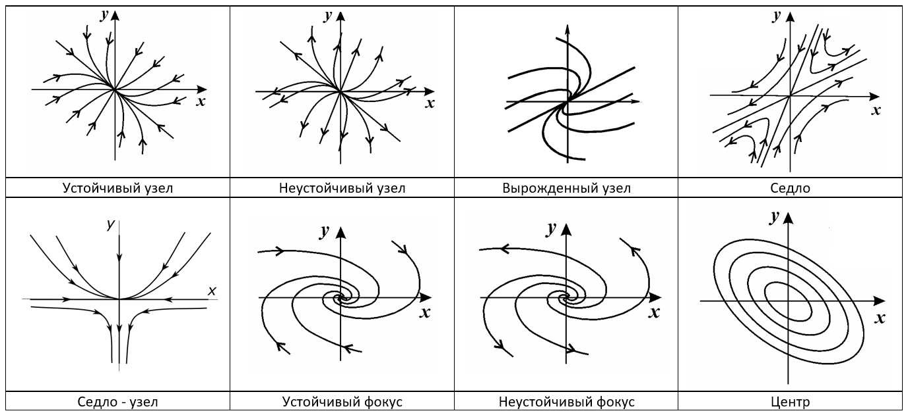
Важная особенность биологических систем – переключение из одного режима функционирования в другой. Например, процесс сон и бодрствование – это разные типы метаболизма.
Переключение между ними происходит периодически и достаточно резко. Такие системы называют триггерными, или системами переключения. Они
обладают способностью длительно находиться в одном из двух устойчивых состояний, а затем переключаться под воздействием внешней силы.
Рассмотрим модель конкуренции животных одного вида. Мгновенный прирост численности двух конкурирующих популяции \(N_1\) и \(N_2\) может быть выражен как
\[\frac{dN_1}{dt} = N_1-N_1N_2-aN_1^2 \]
\[\frac{dN_2}{dt} = N_2-N_1N_2-aN_2^2 \]
где а - коэффициент конкуренции. Такая система имеет четыре стационарных решения:
1. \(N_1=N_2=0\) - неустойчивый узел,
2. \(N_1=N_2=\frac{1}{1+a}\) - седло,
3. \(N_1=\frac{1}{a}, N_2=0\) - устойчивый узел,
4. \(N_1=0, N_2=\frac{1}{a}\) - устойчивый узел.
Фазовый портрет триггерной системы, описывающей явление конкуренции двух популяций, будет выглядеть следующим образом
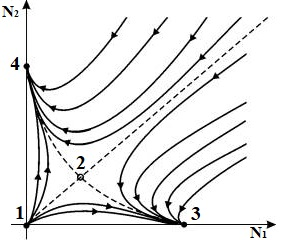
Модель восходящей активирующей системы была создана в 2016 году учеными из сиднейского университета (S. Postnova, S. W. Lockley, and P. A. Robinson). Она объединяет в себе модель циркадного осциллятора (2007 г.) и модель активирующей системы ствола мозга (2007 г). Модель восходящей активирующей системы является триггерной и описывает процесс сна-бодрствования, опираясь на концепцию двухпроцессных моделей, впервые предложенную в 1982 А.Борбели. Модель активирующей системы описывает процессы с точки зрения популяций нейронов и их взаимодействий. Расссмотрим центры сна (MA) и бодрствования (VLPO), состоящие из особых нейронных ядер, отличающихся своими медиаторами (веществами, с помощью которых происходит взаимодействие между нейронами). Активность ядер описываются средним напряжением популяций нейронов. Введем их обозначения для центра сна - 𝑉𝑣, а для центра бодрствования - 𝑉𝑚. Состояние бодрствования регистрируется, когда среднее напряжение нейронов центра бодрствования 𝑉𝑚 превышает некоторое пороговое значение 𝑉𝑡ℎ, иначе считается, что система находится в состоянии сна.
\[\tau_v \frac{dV_v}{dt} = \nu_{vm} Q(V_m) - V_v + A_v + \nu_{vH}H +\nu_{vC}C(X,Y),\] \[\tau_m \frac{dV_m}{dt} = \nu_{mv} Q(V_v) - V_m + A_m,\] \[V_m>V_{th} - система "бодрствует".\]
Здесь \(\tau_v\) и \(\tau_m\) - постоянные времени, \(v_{mv}\) и \(v_{vm}\)- параметры влияния ядер друг на друга, \(A_v\) и \(A_m\)- упомянутые выше параметры,
представляющие собой входы от других популяций нейронов в центры сна и бодрствования соответственно.
Слагаемые \(\nu_{vH}H\) и \(\nu_{vC}C(X,Y)\) описывают воздействие со стороны гомеостатического и циркадного процесса, соответственно.
Ядра MA и VLPO связаны между собой тормозящими связями, и образуют бистабильную систему, которая в отсутствие внешнего воздействия сколь угодно долго находится в одном
из двух устойчивых состояний. Смена состояний (переключение активности ядер) вызывается воздействующими на них циркадным и гомеостатическим процессами, модули C и
H на схеме, соответственно. Кроме того, на активность ядер влияют боковые связи (сигналы других популяций нейронов), представленными параметрами 𝐴𝑣 и 𝐴𝑚.
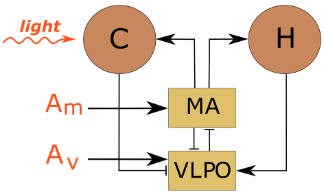
Уровень активности ядра определяется как средняя частота возбуждения нейронов \( Q(V_i)\) и описывается сигмоидной функцией среднего напряжения соответствующей популяции \(V_i\)
\[Q(V_i)=\frac{Q_{max}}{1+e^{(\Theta-V)/\sigma '}}.\]
Итак, триггерными системами, или системами переключения, называются системы, обладающие способностью длительно находиться в одном из двух устойчивых состояний,
а затем переключаться под воздействием силы. Особенностью данной модели является то, что нельзя просто обнулить внешнюю силу. Для того, чтобы в системе была бистабильность, сила должна находится в определенном
диапазоне значений. Для того, чтобы его узнать необходимо построить петлю гистерезиса, которая показывает как система реагирует на воздействие. Эта реакция зависит
от текущего состояния системы, а на интервале времени определяется ее предысторией. На графике \(D=A_v + \nu_{vH}H +\nu_{vC}C(X,Y)\)
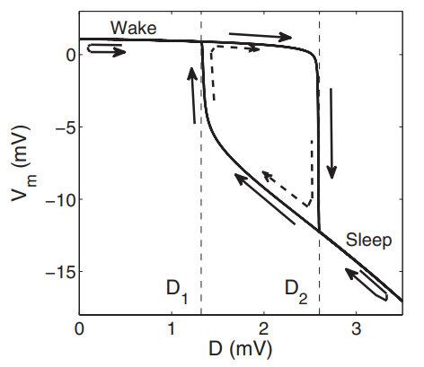
Учтем это, и зададим силу константой, например равной 2. В итоге получается фазовый портрет c одной неустойчивой точкой (2) и двумя устойчивыми узлами (1 и 3)
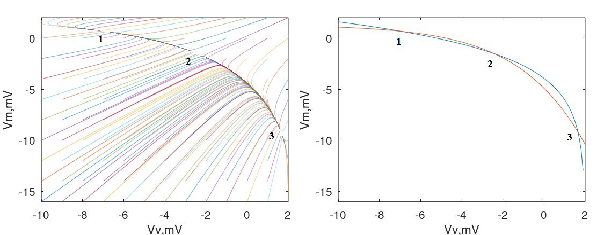
Для того, чтобы убедиться, что на фазовом портрете никакая точка равновесия не пропущена, построим нульклины - линии на фазовой плоскости, в которых решения дифференциальных
уравнений равны нулю. Места пересечения нульклин и есть состояния равновесия.
В случае выхода внешней силы из диапазона бистабильности, мы получим одно пересечение нульклин и одно устойчивое состояние равновесия системы (либо сон, либо бодрствование). Для картины,
представленной ниже - это бодрствование, поскольку сила уменьшилась.
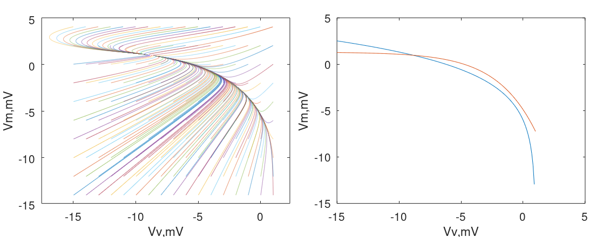
Введем в систему периодическую силу через циркадный \(C\) и гомеостатический \(H\) осцилляторы. Последний полностью определяется активностью центра бодрствования \( Q(V_m)\)
и описывается уравнением
\[\tau_H \frac{dH}{dt} = \nu_{Hm} Q(V_m) - H\]
Параметр \(\nu_{Hm}\) определяет силу связи между гомеостазом сна и центром бодрствования. Гомеостаз сна представляет собой нарастание желание спать в течение бодрствования.
Соответственно во время сна оно спадает.
Циркадный осциллятор основан на генераторе Ван дер Поля с добавлением функций влияния света \(C_{Xp}\), \(C_{Yp}\) и центра бодрствования \(C_{Xn}\).
В двумерном случае он описывается сисемой уравнений, где \(X\) основная переменная, а \(Y\) - дополнительная.
\[\tau_x \frac{dX}{dt} = Y + \gamma \left( \frac{1}{3}X + \frac{4}{3}X^3 - \frac{256}{105}X^7 \right)+C_{Xn} + C_{Xp},\]
\[\tau_y \frac{dY}{dt} = -\left(\frac{\delta}{\tau_c}\right)^2X + C_{Yp}.\]
Циркадный осциллятор представляет собой генератор автоколебаний, где \(\gamma\) - коэффициент нелинейности, \(\delta\) - период согласованности с экспериментальными данными,
а \(\tau_c\) - внутренний циркадный период.
Автоколебания - это незатухающие устойчивые колебания с внутренним источником энегрии, который компенсирует затухание (диссипацию) в системе. Уникальным свойством автоколебательной
системы является то, что в случае ее изоляции от окружающей среды, колебания продолжат генерироваться в своем собственном ритме, который поддерживается внутренним источником энергии.
Понятие автоколебаний было введёно А. А. Андроновым и А.А.Виттом в начале 30-х годов ХХ века. Математически автоколебания описываются автономными системами (где нет явной
зависисмости от времени в уравнениях).
Основными свойствами автоколебательной системы являются:
1. Наличие внутреннего источника энергии
2. Устойчивость колебаний по отношению к возмущениям, т.е. в системе существуют только периодические движения с определенной амплитудой
3. Нелинейность
На фазовой плоскости автоколебания образуют замкнутую кривую, называемую предельным циклом. Он устойчивый и притягивает к себе все траектории, находяшиеся в его окрестности.
Даже если "вытолкнуть" точку с предельного цикла (возмутить систему), через какое-то время точка вернется на него. Таким образом автоколебания не зависят от начальных условий
и способа своего возникновения. На графике ниже (слева) видно, что фазовый портрет циркадного осциллятора представляет собой предельный цикл, а точки (внутри и снаружи цикла)
притягиваются к нему. График построен при \(C_{Xp}=C_{Yp}=0\).
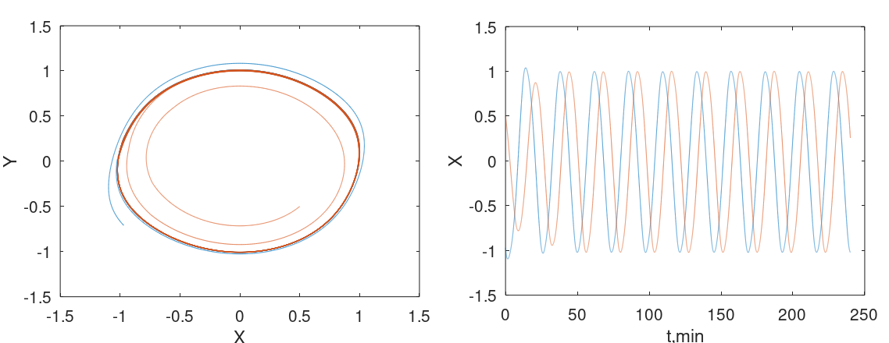
Если теперь обратиться к основных переменных модели \(V_v\) и \(V_m\), то фазовый портрет поменяется. Это будет двумерная проекция той траектории, которую описывают переменные в
5-мерном пространстве (мерность пространства равна количеству уравнений модели). Она представляет собой кривую, которая проходит между положениями равновесия, каждый раз резко
поворачивая вблизи устойчивых точек, которые были определены выше. Таким образом, мы можем говорить о том, что вся система (модель) является
автоколебательной, а в нее встроена бистабильная подсистема \((V_v, V_m)\). Последняя теперь генерирует ритм с различной периодичностью, которая повторяется через какое-то количество суток.
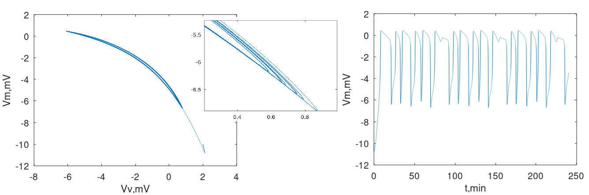
Наиболее важным и интересным свойством автоколебаний является то, что их фаза свободна. Фаза определяет величину смещения точки от положения равновесия в любой момент времени.
Отвлечемся от модели и рассмотрим пример, который поможет понять разницу между колебаниями, вызванными периодическим внешним воздействием, и автоколебаниями.
Имеются две системы: математический маятник, длина нити которого меняется в соответствии с заданной функцией времени \(g(t)\), и человек, катающийся стоя на качелях.
Обе системы находятся в стационарном состоянии, то есть значения амплитуды и периода не меняются во времени. Источником энергии для качелей является мышечная сила человека, стоящего на них.
Движение человека (приседание/выпрямление)
осуществляется в зависимости от положения качелей, а не покакому-то заданному ритму. Колебания маятника вызываются и поддерживаются устройством, меняющим длину нити.
Представленные системы очень похожи, но лишь одна из них является автоколебательной. Чтобы это продемонстрировать необходимо воздействовать на системы (притормозить или толкнуть).
Через достаточно большое время, когда системы вернуться в свое стационарное состояние, мы увидим, что маятник находится в том положении, в котором он был бы в отсутствии возмущения.
Качели же будут находится в произвольном положении,
зависящем от возмущения. То есть фаза маятника определяется силой \(g(t)\), а фаза качелей свободна. Таким образом фаза автоколебательной системы может
быть очень легко подстроена внешним воздействием, и, в результате осциллятор может быть синхронизован.
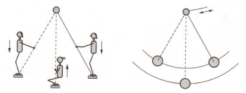
Примечание: автоколебания релаксационные
Из предыдущего раздела мы узнали, что модель активирующей системы является автоколебательной, а значит она способна к синхронизации. Синхронизация - это подстройка
ритмов осцилляторов за счет слабого взаимодействия (связи) между ними, в результате чего системы начинают генерировать колебания с общим периодом (частотой).
Практически невозможно точно определить границу между тем, что есть сильное взаимодействие, а что слабое. Принято считать, что введение связи не должно качественно
изменять поведение каждой из систем, лишать ее индивидуальности. Например, в случае двух осцилляторов остановка одного из них не должна мешать второму поддерживать собственный ритм.
Синхронизация - это процесс, а не состояние. Она возможна только тогда, когда систему можно разделить на два самостоятельных осциллятора, хотя бы одн их которых генерирует
автоколебания.
Кроме силы связи на возможность синхронизации влияет расстройка частот, или разница между частотами систем до взаимодействия \(\Delta f=f_1-f_2\). Если она слишком сильная, то
синхронизация не происходит. Это видно на графике зависимости разности частот связанных систем \(\Delta F\) от расстройки частот \(\Delta f\). То есть существует область
расстройки частот, в которой при взаимодействии систем их частоты становятся равными (или захваченными). Эта область называется областью синхронизации. На рисунке \(\Delta f\) -
разница частот до взаимодействия, а \(\Delta F\) - после взаимодействия.
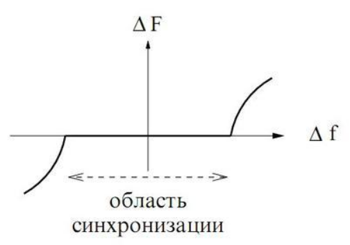
Вернемся к модели сна. Управлять синхронизацией в ней можно, например, с помощью интенсивности света. Это называется синхронизация силой, когда ритм свет-темнота
подстраивает под себя циркадный ритм. Влияние света осуществляется через функции связи для каждой из переменных осциллятора
\[C_{Xp} = \nu_{Xp} \alpha_I(1-P)(1-\epsilon X)(1-\epsilon Y),\]
\[C_{Yp} = \alpha_I(1-P)(1-\epsilon X)(1-\epsilon Y) (\nu_{YY}Y - \nu_{YX}X).\]
Параметры \(\nu_{YY}\) и \(\nu_{YX}\) делают воздействие зависимым от текущей фазы циркадного осциллятора, а \(\epsilon\) - задает степень чувствительности
световой составляющей к циркадным переменным.
Физиологически влияние света на циркадную систему осуществляется через особые ганглиальные клетки (фоторецепторы) на сетчатке глаз.
Их активностьв модели представлена переменной \(P\). Интенсивность света моделируется прямоугольным сигналом (с 8 до 20 день, с 20 до 8 ночь)
\[\tau_P\frac{P}{dt} = \alpha_I(1-P) - \beta P, \]
\[\alpha_I = \alpha_0 S\frac{I}{I+I_1}\sqrt{\frac{I}{I_0}}, \]
Доля фоторецепторов, готовых к активации, составляет \(1-P\). Они переходят в активное состояние со скоростью \(\alpha_I\), и спонтанно деактивируются со скоростью \(\beta\).
Параметры \(\alpha_0, I_0, I_1\) задают зависимость активности фоторецепторов от интенсивности света, \(\tau_p\) - постоянная времени активации.
Переменнная \(S\) принимает значение равное 1, когда система бодрствует и 0 - когда спит. Она делает световой сигнал значимым только в состоянии бодрствования (глаза открыты).
Свет (начиная с достаточного значения интенсивности) синхронизует циркадный осциллятор и его период становится равным 24 часам, в то время как без света период был 23,78 ч.
Разница между частотами (расстройка) небольшая, поэтому синхронизация возможна. В этом случае модель перестает быть автоколебательной и генерирует колебания с частотой \(2\pi/24\).
Фазовая траектория основных переменных больше не гуляет у положений равновесия, как это было раньше.
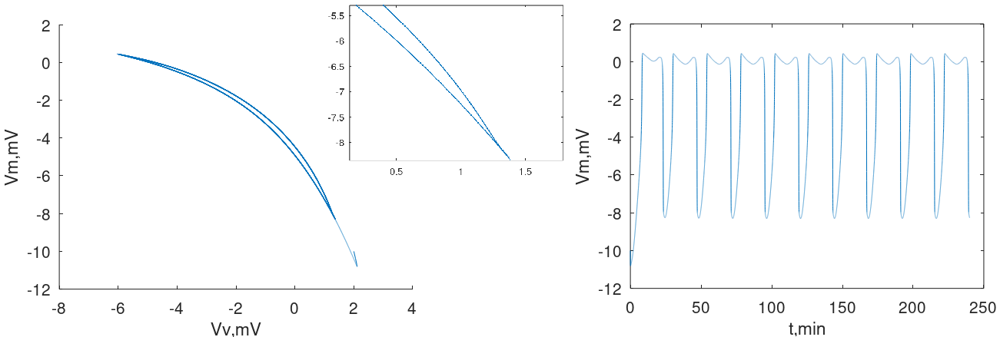
Одним из способов исследования синхронизации является стробоскопический метод. Он заключается в том, что нужно наблюдать фазу автоколебаний под периодическим воздействием силы в
моменты времени, когда фаза внешней силы принимает некоторое фиксированное значение \(t_k=kT\), где \(T\) - период внешней силы, \(k\)=1,2,3,... . В случае нашей модели будем ежедневно
фиксировать основные переменные, например, в 10 утра. Когда света очень мало или его вовсе нет, стробоскопический метод покажет сильно разбросаннные по фазовой плоскости точки. То есть
каждый день значение перемнных в заданное время отличается от предыдущего дня. Система не синхронизована. При увеличении освещенности точки начинают сближаться и,
в результате, сольются в одну, что будет говорить о полной синхронизации в системе. Интенсивность света на графиках слева направо: 0 lx, 80 lx, 200 lx.
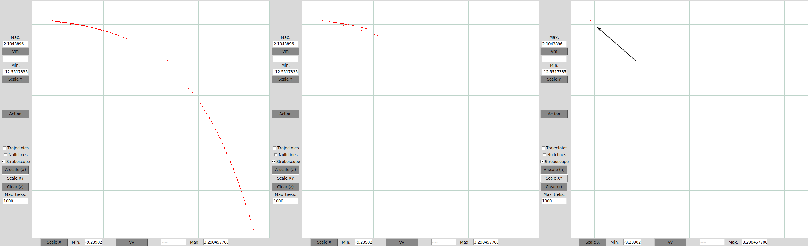
Интересно наблюдать за поведением модели с помощью диаграмм, где обозначаются физиологические показатели, такие как начало и окончание сна,
минимум внутренней температуры тела (CBTmin) и пик мелатонина - гормонa сна (MELpeak) - в плазме крови. Этот способ удобен и часто используется в современной литературе.
О рассинхронизации здесь говорит несоответствие количества физиологических маркеров количеству дней расчета, появление дополнительных снов, уход под углом циркадных маркеров.
Ниже представлены диаграммы для случая, когда внешняя сила (свет) отсутствует и когда система синхронизована (интенсивность света 200 lx). Желтым цветом обозначается сон,
а фиолетовым - бодрствование, маленькие квадратики показывают границу перехода между этими состояниями, которая возникает когда перемнная центра бодрствования достигает
своего порогового значения с той или другой стороны (\(V_m>V_{th} - система "бодрствует"\)). Минимум внутренней тепмературы тела (зеленые треугольнички) и пик мелатонина
в плазме крови (красные квадратики) определяется исходя из переменных циркадного осцилллятора:
\[t_{CBTmin} = t_{\phi}+t_0,\]
\[t_{MELpeak} = t_{\phi}+t_1,\]
\[\phi=atan(\frac{X}{Y}).\]
Здесь постоянные временные смещения \(t_0=0.7\) и \(t_1=2.7\) соответствуют экспериментальным исследованиям.
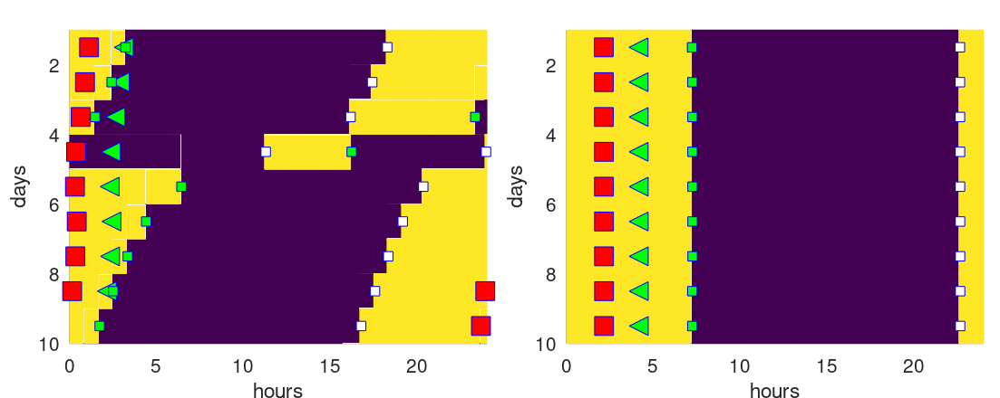